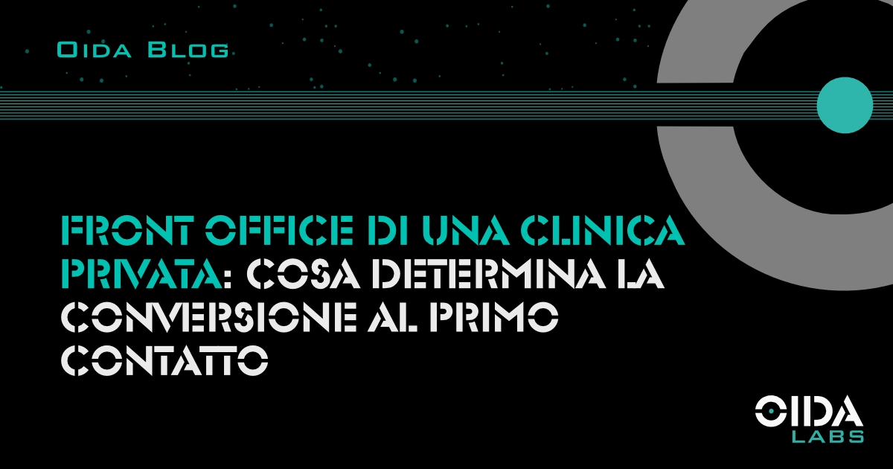

← Tutti gli articoliFront office di una clinica privata: cosa determina la conversione al primo contatto
Il front office è il punto in cui le campagne diventano pazienti, o si perdono. Cosa distingue un processo di accoglienza che converte da uno che disperde i contatti generati dal marketing.
La campagna genera il lead. Il front office determina se quel lead diventa un paziente. Questa sequenza è ovvia sulla carta e sistematicamente ignorata nella pratica: le strutture sanitarie private investono budget significativi in campagne digitali e lasciano poi la conversione all’efficienza individuale di chi risponde al telefono, senza processo, senza formazione specifica, senza misurazione.
Il front office di una struttura sanitaria privata non è un costo di gestione: è una variabile di marketing. La sua performance determina quanta parte dell’investimento in campagne si trasforma in visite effettivamente erogate.
- Perché il front office è una variabile di marketing
- Cosa succede nella prima risposta
- Il processo che le strutture non costruiscono
- Formazione vs procedure
- Come si misura la performance del front office
- FAQ
Perché il front office è una variabile di marketing
In che modo il front office di una clinica privata influisce sui risultati delle campagne di marketing?
Il funnel di acquisizione paziente non finisce quando una campagna genera un contatto: finisce quando il paziente si presenta alla visita. Tutto ciò che accade tra la compilazione di un form e la visita erogata è governato in parte dal marketing (quale landing page, quale messaggio, quale canale) e in parte dal front office (chi risponde, come risponde, in quanto tempo, con quale follow-up).
La dispersione che avviene in questa fase è raramente attribuita correttamente. Quando le campagne producono lead ma le agende non si riempiono, la prima reazione è ottimizzare le campagne: abbassare il CPL, cambiare audience, riscrivere il testo degli annunci. L’ipotesi che il problema sia a valle della campagna, nel processo di risposta ai contatti, viene esplorata molto meno frequentemente.
Dati interni OIDA Labs su strutture monitorate mostrano che in una percentuale rilevante di casi la distanza tra lead generati e visite erogate non dipende dalla qualità della campagna ma dalla gestione dei contatti in entrata: tempi di risposta lunghi, prime interazioni standardizzate che non costruiscono fiducia, assenza di follow-up sistematico per i contatti non convertiti al primo tentativo.
Cosa succede nella prima risposta
Quali caratteristiche deve avere la prima risposta a un lead in entrata per aumentare il tasso di conversione?
Il paziente che ha compilato un form o chiamato una struttura sanitaria privata è in una fase valutativa attiva: sta decidendo se fidarsi. La prima risposta è il momento in cui questa decisione si consolida o si scioglie.
Tre caratteristiche che differenziano una prima risposta ad alto tasso di conversione.
La prima è la specificità. Una risposta che affronta la domanda esatta del paziente (“ho un dolore alla spalla da tre settimane, devo fare una visita ortopedica?”) converte significativamente di più rispetto a una risposta standardizzata che fornisce orari, tariffe e indirizzo senza riconoscere la specificità della richiesta. La specificità comunica che la struttura ha ascoltato, non solo che ha ricevuto il messaggio.
La seconda è la fiducia percepita. Il paziente non sta solo acquistando una prestazione: sta affidando la propria salute a una struttura che non conosce ancora. La prima risposta deve costruire un livello minimo di fiducia: chi siamo, perché siamo adatti al tuo problema specifico, cosa succede nel percorso di cura. Non è un processo di vendita, è un processo di rassicurazione.
La terza è la continuità. Una prima risposta efficace chiude sempre con un passo successivo chiaro: una proposta di appuntamento, un invito a chiamare per un chiarimento, una conferma dell’invio di una documentazione. Il paziente che esce dal primo contatto senza sapere cosa fare dopo raramente torna da solo.
Il processo che le strutture non costruiscono
Perché la gestione del front office in una clinica privata viene lasciata all’improvvisazione?
La ragione principale è che il front office viene percepito come un costo operativo da tenere sotto controllo, non come una funzione che può aumentare o diminuire il ritorno sulle campagne di marketing. In assenza di questa percezione, non si investe nel costruire un processo: si assume personale, si fornisce una formazione minima sull’uso del gestionale e si conta sull’esperienza individuale.
Il problema con questo approccio non è la buona volontà del personale, che in molti casi è alta. Il problema è che senza un processo definito, la qualità della risposta varia in modo non controllabile: dipende da chi sta al telefono quel giorno, dal carico di lavoro di quel momento, dall’umore della conversazione precedente. Il paziente che chiama alle 9 di martedì riceve un’esperienza diversa da quello che chiama alle 17 di venerdì.
Un processo definito non elimina la variabilità umana, ma la riduce: cosa dire nella prima risposta, come qualificare la richiesta, come gestire un paziente indeciso, come registrare il contatto nel CRM, quando fare follow-up e con quale messaggio. Queste decisioni, prese una volta e documentate, non devono essere riprese ogni volta.
La connessione tra front office e CRM è qui: il processo di risposta ai contatti funziona in modo sistematico solo se esiste un sistema che traccia ogni interazione e attiva i follow-up necessari. Il dettaglio di questa integrazione è analizzato nell’articolo sul CRM sanitario.
Formazione vs procedure: cosa cambia l’ago della bilancia
È più utile formare il personale del front office o costruire procedure operative?
La domanda è posta male: formazione e procedure risolvono problemi diversi e devono coesistere. Ma se una struttura può investire in uno solo dei due, le procedure hanno un ritorno più immediato e più misurabile.
La formazione migliora le competenze dell’individuo: aumenta la capacità di gestire conversazioni difficili, di costruire empatia in modo autentico, di comunicare in modo chiaro su temi clinici complessi. È un investimento a lungo termine che produce benefici diffusi ma difficilmente attribuibili.
Le procedure risolvono un problema specifico: garantire che le azioni minime necessarie per non disperdere un lead vengano eseguite in modo consistente, indipendentemente da chi le esegue. Una procedura che specifica entro quanto tempo rispondere a un contatto in entrata, come registrarlo nel CRM e quando fare follow-up non richiede formazione avanzata: richiede che qualcuno l’abbia progettata e che il personale la conosca.
La sequenza corretta è: prima le procedure (cosa deve succedere in ogni situazione), poi la formazione (come farlo nel modo migliore possibile). Invertire l’ordine produce personale formato su uno stile di comunicazione efficace che opera però su un processo che non garantisce la copertura sistematica dei contatti.
Come si misura la performance del front office
Quali metriche permettono di valutare l’efficacia del front office di una struttura sanitaria privata?
Quattro metriche che danno una fotografia realistica della performance.
1. Il tasso di risposta entro la finestra critica: percentuale di lead che ricevono una prima risposta entro il tempo definito dalla procedura interna. Questa metrica richiede che la struttura abbia un CRM che traccia l’orario di arrivo del contatto e l’orario della prima risposta.
2. Il tasso di conversione da primo contatto ad appuntamento fissato: quanti dei lead che ricevono risposta fissano un appuntamento. Se questo tasso è basso a fronte di un tasso di risposta alto, il problema è nella qualità del primo contatto, non nella velocità.
3. Il tasso di no-show: quanti degli appuntamenti fissati non vengono onorati senza preavviso. Un tasso di no-show alto segnala spesso un disallineamento tra le aspettative create nel primo contatto e la realtà dell’esperienza in struttura.
4. Il tasso di conversione da appuntamento a paziente ricorrente, per le specialità con possibilità di follow-up: fisioterapia, odontoiatria, medicina preventiva. Questo indicatore misura la qualità dell’intera esperienza paziente, di cui l’accoglienza al front office è la prima componente.
Sintesi
Il front office è il punto di giunzione tra il marketing e la clinica: dove le campagne si trasformano in pazienti, o non si trasformano. Una struttura che ottimizza le campagne senza presidiare il processo di risposta ai contatti ottimizza metà del funnel. L’investimento in procedure chiare, formazione del personale e integrazione con il CRM non è un costo operativo: è la condizione necessaria perché l’investimento in marketing produca il ritorno atteso.
FAQ
Quante ore al giorno dovrebbe essere presidiato il front office di una clinica privata?
Dipende dalla specialità e dalla composizione del target. Per strutture generaliste con pazienti che lavorano, i picchi di contatto si concentrano in fasce orarie precise: prima mattina (7-9), pausa pranzo (12-14) e tarda mattinata. Un front office non presidiato in queste fasce perde contatti. La risposta è pianificare la copertura in modo coerente con i picchi di contatto specifici della struttura, non semplicemente allargare l’orario.
Come si gestisce la risposta ai contatti WhatsApp in una clinica privata?
WhatsApp è diventato un canale di primo contatto frequente. Il problema è che WhatsApp personale del personale non è tracciabile, non è trasferibile in caso di malattia o ferie, e non si integra con il CRM. Le soluzioni più adottate sono WhatsApp Business API integrata con il CRM, oppure procedure esplicite che definiscono chi è responsabile di rispondere, entro quanto tempo e con quale tipo di messaggio.
Il turnover del personale di front office è un problema di marketing?
Indirettamente sì. Ogni cambio di personale di front office implica un periodo di apprendimento in cui la qualità del processo cala. Strutture con alta rotazione del personale perdono le competenze individuali accumulate e, con esse, la continuità della relazione con i pazienti in fase di valutazione.
Fonti: Dati interni OIDA Labs (analisi conversione lead per tipologia di struttura sanitaria 2023-2025); MIT Sloan / InsideSales.com Lead Response Management Study; Dossier Cergas Bocconi Strutture sanitarie private in Italia (2024).